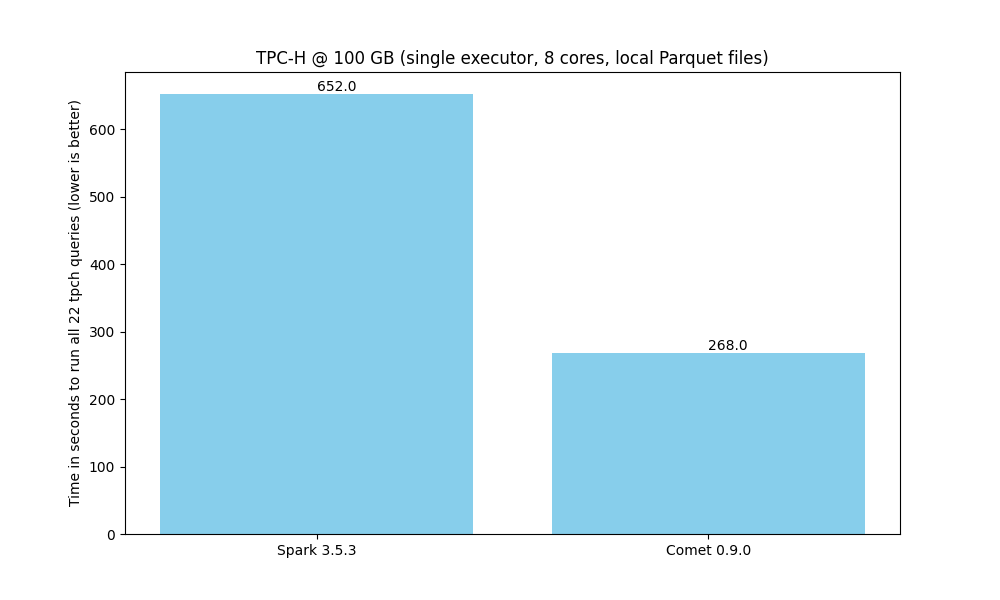
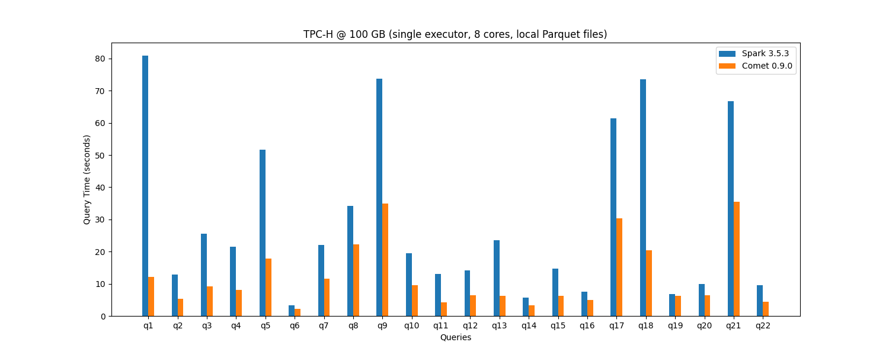
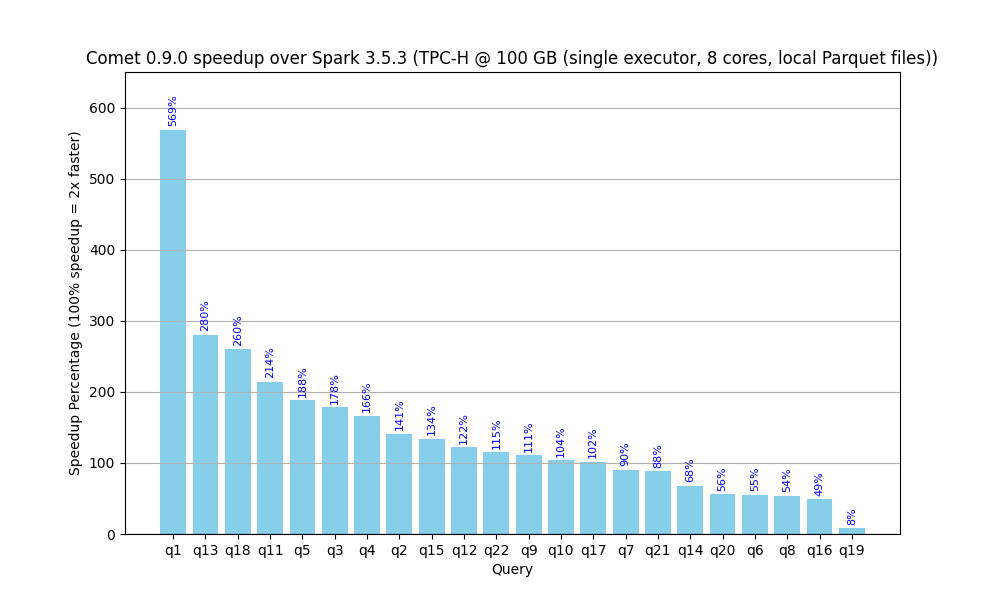
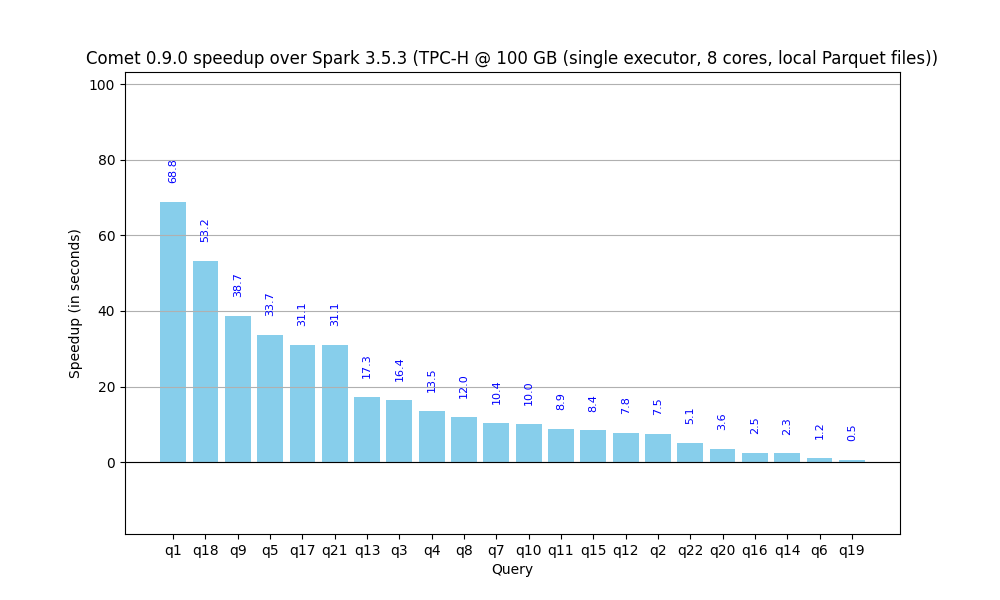

Apache DataFusion Comet: Benchmarks Derived From TPC-H¶
The following benchmarks were performed on a Linux workstation with PCIe 5, AMD 7950X CPU (16 cores), 128 GB RAM, and data stored locally in Parquet format on NVMe storage. Performance characteristics will vary in different environments and we encourage you to run these benchmarks in your own environments.
The tracking issue for improving TPC-H performance is #391.

Here is a breakdown showing relative performance of Spark, Comet, and DataFusion for each query.

The following chart shows how much Comet currently accelerates each query from the benchmark in relative terms.

The following chart shows how much Comet currently accelerates each query from the benchmark in absolute terms.

The raw results of these benchmarks in JSON format is available here: